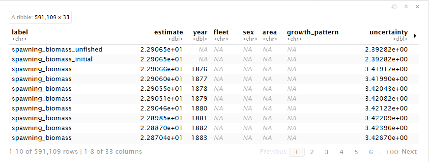
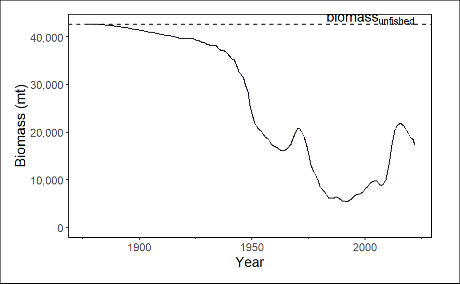
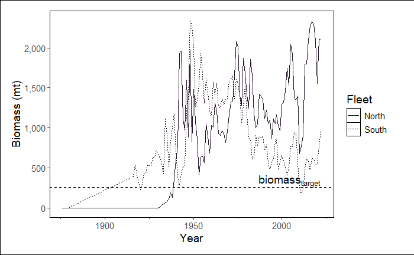
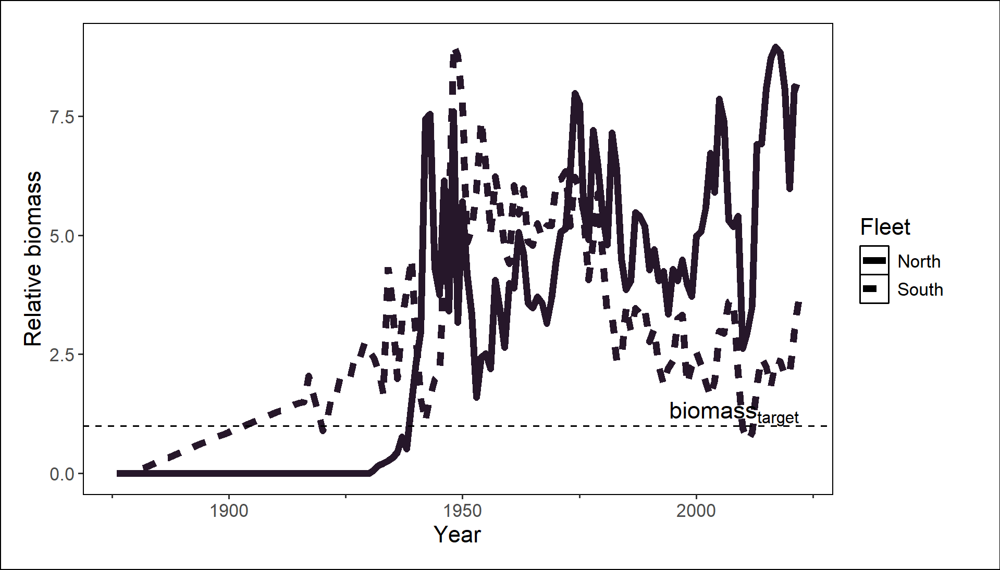

{kind=link}
{kind=link}
---
title: "Stock Assessment Report"
author: "Patrick Star"
date: today
params:
species: "Petrale sole"
---NSAW workshop
Description
Workshop about how to make stock assessment reports using a workflow based on the asar and stockplotr R packages. This 3-hour workshop is an abbreivated version of our full workshop (also shown on this website, under Days 1-3) that was designed for the National Stock Assessment Workshop (NSAW) in La Jolla, CA.
Objectives
- Learn how R markdown can be used to enhance
asarreports - Understand how Quarto is used to structure an
asarreport - Practice setting up a reporting workflow using
asar - Create semi-automated figures and tables with
stockplotr
Introduction
Icebreaker
Welcome! Please open the communal notes doc and participate in the icebreaker exercise.
Code of conduct
Everyone participating in this workshop is required to abide by the terms of our Code of Conduct. We encourage you to contribute to a positive environment for our community by:
- Demonstrating empathy and kindness toward other people
- Being respectful of differing opinions, viewpoints, and experiences
- Giving and gracefully accepting constructive feedback
- Accepting responsibility and apologizing to those affected by our mistakes, and learning from the experience
- Focusing on what is best not just for us as individuals, but for the overall community
If you believe that someone is in violation of the Code of Conduct, please report the incident to our community leaders responsible for enforcement using this form.
Who are we?
Sam Schiano and Sophie Breitbart are contractors with ECS Federal working in support of the NOAA Fisheries National Stock Assessment Program. Our work primarily focuses on stock assessment workflows by creating tools to help stock assessment scientists increase throughput. We are developing two R packages, asar and stockplotr, using an open science framework that prioritizes transparency and reproducibility.
How to engage with us
Questions: Please raise your hand at any time. Depending on our schedule, we may ask that you save larger questions for breaks.
Materials for today’s lesson
- Communal notes doc
- Contains resources (from us and you!) and areas for note-taking
- Sample data
- Sample model output data for coding demonstrations
- Example figure
- Example figure for coding demonstration
- JupyterHub workshop server- OPTIONAL
- This is a TEMPORARY workspace where you can code along with us, if you’d prefer. Its contents are erased regularly, so it’s useful for performing temporary analyses- not storing files for more than a few days. If you’d like to keep the files you create today, be sure to export those files at the end of our workshop.
- All necessary packages are already installed
- Username: your email
- Password: ask us
- To log in, follow the three steps in these instructions to start the server, with one exception: Choose the “R - ASAR Stock Assessment” image . When the server has started up and you’ve reached the Launcher page- i.e., your screen looks like this- select the RStudio button. Now you are ready to begin!
If you’d like to use JupyterHub for today’s coding environment, please open a session now. You’ll need to download the two example files in Step 5 of the pre-workshop checklist.
Package installation
asar, stockplotr, and tinytex should already be installed if you attended Days 1 or 2. If not, please install these packages by following the instructions in the pre-workshop checklist.
TipTip
If you’re using the JupyterHub workspace, those three R packages are already installed. No need to reinstall them.
Workshop overview
Purpose and benefits to you
By the end of this workshop, we hope that you come away with the knowledge and confidence to write your next stock assessment report using a reproducible, efficient, and transparent workflow based on asar and stockplotr.
Overview of asar-based reporting workflow
Main steps for creating a stock assessment report with asar:
- Install packages
- Convert model output into format usable by
asar - Create the report skeleton
- Make child docs containing figures and tables (made with
stockplotror by other means) - Fill in child docs with text
- Render report
- Add accessibility features (PDF tags and alternative text for figures)
Tip
Open the asar cheatsheet for a visual overview of the main workflow!
(R) markdown
According to RStudio, markdown is “an easy-to-write plain text format”; not exactly a language, but a formatting style.
R markdown, or “Rmd” for short, allows you to create amazingly dynamic reports. With R markdown, you can embed your R code directly into your documents. When you “knit” the document, the code is executed, and the results— like figures, tables, parameters, citations, and other outputs— are automatically inserted into the final report.
A major reason why R markdown is incredibly useful: it saves time and reduces errors. If your data changes, you don’t have to manually rerun your analysis and copy/paste the results. You just re-knit the document, and everything is updated automatically.
The core components
- The YAML Header: This is the section at the top of the file, enclosed by triple dashes (
---). It contains metadata about the document, like the title, author, and output format. - Text and Formatting: This is where you’ll write the narrative of your report using Markdown syntax.
- Code Chunks: These are sections of the document where you can embed and run your R code.
Common uses in asar reports
Now, let’s dive into some of the most common features you’ll be using when creating asar reports.
Parameters
Parameters allow you to create dynamic reports. You can define parameters in the YAML header and then reference them in your text and code.
For example, you could have a parameter for the species you’re writing about:
Then, in the body of your report, you can reference this parameter like this:
“The native range of `params$species` spans from…”
When you knit the document, `params$species` will be replaced with “Petrale sole”.
Formatting
R Markdown uses a simple syntax for formatting your text. Here are some of the most common formatting options:
- Headers
#signifies a top-level header##signifies a second-level header (etc.)
- Emphasis
*italic*for italic text**bold**for bold text
- Lists
- Unordered lists: Use
*or-at the beginning of a line. - Ordered lists: Use numbers followed by a period.
- Unordered lists: Use
- Links
[link text](URL)
Math and Equations
You can include LaTeX-style math equations in your report.
- Inline math: Wrap your equation in single dollar signs:
$A = \pi * r^2$ - Block equations: Wrap your equation in double dollar signs to display it on its own line:
$$ E = mc^2 $$
References and Bibliography
You can easily add citations to your report. We provide an asar_references.bib file in the “report” folder with hundreds of citations for you to reference, though you can add your own to the file too.
To cite a reference in the text, use the @ symbol followed by the citation key (e.g., @Biddle_1992). R Markdown will automatically format the citation and add it to the “References” section towards the end of your report.
Quarto
Quarto is an ideal platform for building reproducible reports, which are denoted with a .qmd (Quarto Markdown) extension type. Why?
It allows you to combine narrative text, source code (like R), and the outputs of that code (like tables and figures) into a single, polished document.
Anyone with the same files can reproduce that document, which goes a long way in promoting scientific integrity.
You can produce reports in several formats like HTML, PDF, and Word.
Modularized setup with a skeleton
When you run asar::create_template(), you will receive a “report” folder with several files within it. One of the most important files is what we call the “skeleton”: a .qmd file containing chunks that run other files, then places the rendered contents of those files within one report.
Those other files are what we call “child documents”. For example, your report introduction will be written in a child document. Your figures and tables will be placed in respective child docs, too.
This setup avoids placing your entire report in one massive .qmd file, facilitates asynchronous collaboration with your colleagues, and keeps your project organized (in a “modular” fashion).
Relative pathnames
Important
Only files with paths relative to the Quarto doc will load!
Quarto projects are self-contained such that it can only find files if you tell it where to look relative to the location of the .qmd file. To Quarto, the location of that .qmd file essentially becomes the root of your directory.
For example, imagine your project has this structure:
report/
├── SAR_species_skeleton.qmd
├── 01_executive_summary.qmd
├── 02_introduction.qmd
└── extra_data/
└── red_fish.csv
└── blue_fish.csvTo load ‘red_fish.csv’ inside SAR_species_skeleton.qmd, you would use a relative path:
my_data <- read.csv("extra_data/red_fish.csv")This would work even if your working directory is not the “report” folder.
TipOutside today’s scope
Learn about code chunks on our Day 1 page!
CautionPractice exercises: Markdown
- Create a new quarto document
- Add the following elements:
- Level 1 header (call it “Sandwiches”)
- Level 2 header (call it “My favorite sandwich”)
- Under heading level 2, add a sentence that describes your favorite sandwich. Italicize “favorite” and bold the sandwich name.
- Add an unordered list with the sandwich’s ingredients.
- Add an ordered list with the steps needed to make the sandwich.
- Find the first ingredient in the list and add a link to its wikipedia page.
- Your instructors are hungry, and they’re demanding that you split your sandwich with them. Use an inline mathematical notation to write the fraction necessary to feed the three of you.
CautionAnswers for Practice exercises: Markdown
- Create a new quarto document
Answer: Follow directions in the Day 1 “Opening a Document” section
- Add the following elements:
- Level 1 header (call it “Sandwiches”)
- Level 2 header (call it “My favorite sandwich”)
- Under heading level 2, add a sentence that describes your favorite sandwich. Italicize “favorite” and bold the sandwich name.
- Add an unordered list with the sandwich’s ingredients.
- Add an ordered list with the steps needed to make the sandwich.
- Find the first ingredient in the list and add a link to its wikipedia page.
- Your instructors are hungry, and they’re demanding that you split your sandwich with them. Use an inline mathematical notation to write the fraction necessary to feed the three of you.
Answers: Add code like the following:
# Sandwiches
## My favorite sandwich
My *favorite* sandwich is a **peanut butter and jelly sandwich**.
Ingredients:
- [peanut butter (PB)](https://en.wikipedia.org/wiki/Peanut_butter)
- jelly
- bread
Steps:
1. Get two slices of bread
2. Spread PB on one side of one slice of bread
3. Spread jelly on one side of the other bread slice
4. Stack the PB slice on top of the jelly slice so that PB and J meet in the middle of the sandwich.
5. Eat!
I'll split my sandwich into three pieces so that each person can get $1/3$ of the sandwich.asar: Automated Stock Assessment Reporting
In this section we will cover the basics of asar by generating a stock assessment report and going through basic navigation of the template.
Recommended workflow
We highly recommend using a project-based workflow. This involves creating an R project for each report, which facilitates returning to your session and maintaining files. Using either a project or GitHub repository will help you in the long run.
To create a new R project in Rstudio:
File > New Project > New or Existing Directory
Important
If you use VSCode or Positron for your IDE, by navigating to a folder on your computer, it will automatically initialize a project-like environment.
The main asar functions
asar revolves around a few primary functions* and contains several support functions that help make the template. While most are accessible to the user, they would not perform helpful functions for them. We will be going over the following functions:
create_template()stockplotr::convert_output()* (*This function is now located withinstockplotrbut is useful for buildingasarreports)create_tables_doc()create_figures_doc()
create_template()
What it does:
Generates a set of files that setup a stock assessment report with its supporting files.
Within the created files is the “skeleton file” which drives the render of the entire report. For those familiar with Rmarkdown or Quarto books, this is operating similar to a .yml file. The other quarto files found in your folder will be what we refer to as “child documents”, or child docs for short. These are the actual files that you will fill in when writing your report. These are the bulk of your content!
Try it out!
create_template() contains A LOT of arguments that allow the user to customize their document how they want. The function contains a set of defaults that would produce a template that could be rendered, but contains no real information relevant to the target stock.
So, let’s do more than just create a blank template! The following arguments are some key parts to fill in for a specific stock assessment report:
| Argument | Options |
|---|---|
| format | pdf, html |
| type | SAR, pfmc, safe |
| office | afsc, pifsc, nefsc, nwfsc sefsc, swfsc |
| region | - |
| species | - |
| spp_latin | - |
| year | - |
| authors | - |
| file_dir | - |
# Adjust below example based on audience
library(asar)
library(here)
create_template(
format = "pdf", # optional "html"
type = "SAR", # add'l options: "safe", "nemt", "pfmc"
office = "NWFSC",
region = "U.S. West Coast",
species = "Petrale sole",
spp_latin = "Eopsetta jordani",
authors = c("Samantha Schiano" = "OST"),
file_dir = here::here()
)Run it!
You should see a folder called “report” where you indicated in the argument file_dir. It should have a set up that looks like this:

asar-generated template found in the report folder.
Note
You should see a variety of messages reported in the console to indicate that it worked! For a blank template with no errors, it should look like this:

Let’s take a tour of the content we created!
The skeleton

As previously mentioned, the skeleton file controls the rest of the report. This is the file you go to to compile your report, change formatting, or add quantities to reference in your document.
When using asar, you don’t actually have to adjust the yaml yourself. The beauty of using asar is that it removes this task, but filling out information provided in the create_template() arguments and providing the template custom formatting that is part of the package (and the NOAA standard!).

asar yaml controlling formatting and basic document information.The YAML controls the following:
- title
- authorship
- formatting
- rendered file name
- parameters
- species cover image
- bibliography
- citation style
Parameterization
Quarto has a cool feature that allows users to parameterize their document by utilizing markdown’s ability to render in-line code throughout your writing. In the yaml, there are pre-added parameters of the species, Latin name, region, and office. These are called in through an R chunk after the YAML.
You have two options for calling these parameters in your writing.
- ` r params$species ` (Quarto parameterization)
- ` r species ` (
asaruse of parameterization)
The preamble
The preamble is an R chunk that loads in a script called “preamble.R” which extracts key quantities commonly referenced in stock assessment reports. This will only work with a standard results file converted using asar::convert_output(), which we will get to shortly.

The quantities in found in this chunk can be referenced in-line throughout the document:
` r R0 `
Note
For more information on markdown notation, see Day 1 of this workshop or navigate to our article on the topic!
Let’s find the preamble and see the methods to edit it
The content
The “child docs” are where you as the assessment author or contributor report out the information you need to include. The template is highly modular so there are files for each section of the report and sometimes files for subsections. The default asar template creates child docs following the NOAA standard stock assessment report guidelines consisting of the following:
- executive summary
- introduction
- data
- assessment (modelling and results)
- discussion
- acknowledgements
- references
- tables
- figures
- appendix
Each child doc contains pre-determined headers and labels for the author to reference back to throughout the document. There are also descriptions within each section that depcit what you should report on throughout the document. You can either keep or remove these notes once the document is finished, either way, they will not be included in your final report.
Child docs are not intended to be rendered on their own, but only from the skeleton as a whole!
Important
We are advising everyone that if required content is needed beyond the standard guidelines, that it gets placed in the appendix; however we encourage everyone to think about the importance of the content in terms of review for management versus CIE or SSC review.
stockplotr::convert_output()
What it does:
This function, which was formerly located within asar but has been moved to stockplotr, converts an output file from a stock assessment model to a standard format. This file can be used to extract quantities within the preamble and to build figures and tables with stockplotr (covered in Day 3).
The convert_output function currently accepts output from Stock Synthesis (Report.sso) version 3.30 and higher, Beaufort Assessment Model (BAM; output.rda), or Fishereies Integrated Modelling System (FIMS; R object). We are actively working on expanding the convert_output function to be compatible with all major U.S. stock assessment models. This function takes a lot of resources to develop, so any contribution to the package is welcome! If you have a model that is not currently compatible with stockplotr::convert_output(), please navigate to our article describing the function and how to get your output in the same format as those produced from the converter!
Let’s try it out!
We have uploaded an example Report.sso file in the workshop GitHub, but if you have a compatible output file, we encourage you to use your own.
# Identify output file
output_file <- here::here("example_output", "Report.sso")
# convert the output
petrale <- stockplotr::convert_output(output_file)Run it!
petrale
Tip
convert_output() will recognize which model the results file came from as well as fleet names. In the rare case either of these are incorrect, the function contains arguments of model and fleet_names which you as the user can indicate for the function.
If you are explicitly stating fleet names, make sure they are in the order you expect them to be found in the file.
Format of converted output
The converted output is a tibble that reframes and reshapes your data. The tibble contains each output value as a row with its error and any associated indexing values.
Note
Let’s walk through a standard output file in more detail.
Note
For more information, navigate to this article describing the conversion process and find ways your can convert your model’s data!
create_tables_doc() & create_figures_doc()
What they do:
These functions create child documents that display your report’s tables and figures, respectively.
If you run create_template() without folders in your working directory that contain your figures (called “figures”) and tables (called “tables”), then the resulting child documents will be empty except for a note referring you to use stockplotr to make plots.
Once you’ve added files to those “figures” and “tables” folders, you can rerun create_tables_doc() & create_figures_doc() to add those plots to your report. We cover how to do this in Day 3.
Advanced asar workflow
Now we are going to walk-through a more complex use of asar by
- Customizing our sections
- Reorganizing section order
Create-your-own
There are three additional template options available to users to use while we work to set standard assessment report guidelines across the country. They include SAFE reports, NEFSC management track reports, and PFMC guidelines. Not only thing, but you have the ability to add new sections either within the current outline or in individual sections or even select which sections of the standard template you want to create your report around.
Today, we will be going over how to customize your template by selecting a subset of the standard guidelines then adding in a new section within our data section.
First, let’s make our template.
We are creating a new report, so please set your working directory to a new folder or rename our previous “simple” report folder to “simple_report” or something along those lines.
asar::create_template(
# Previous arguments we used for simple
format = "pdf",
type = "SAR",
office = "NWFSC",
region = "U.S. West Coast",
species = "Petrale sole",
spp_latin = "Eopsetta jordani",
authors = c("Samantha Schiano" = "OST"),
# New arguments
custom = TRUE,
custom_sections = NULL,
new_section = NULL,
section_location = NULL
)
Tip
To identify what sections you can include from the standard guidelines, you can run list.files(system.file("templates", "skeleton", package = "asar")). Note: this only includes sections within a standard template. To see other sections for available templates, replace “skeleton” with your target template acronym.
Don’t worry if you forget! You can find this code in the documentation for the “custom_sections” argument.
Rerendering report
We understand that it’s easy to forget to enter in all of the information you need for a report on it’s initial creation! Because of this, we made the argument “rerender_skeleton” that adds on any new information to the skeleton file that you might want such as additional authors, a new species image, parameters, or anything that is open for you to customize in the skeleton file.
You COULD do this manually, but using the function both allows you to create a record of your changes (making it more reproducible) and makes the Quarto yaml less intimidating to new users!
Note
You can run re-render skeleton as often as you want, it will always edit the current skeleton in the folder. Please note: any additional skeleton files will make this process fail. The process will also verify that you want to overwrite the current skeleton and either keep or replace the key quantities file.
Introduction to stockplotr
Package information
This package is an ongoing process to gather contributions in order to expand the number of pre-made tables and figures that can be incorporated into a stock assessment report. All objects are intended to be generalized and not specific to any region.
The following table contains figures and tables that are available in stockplotr:
| Function | Description |
|---|---|
plot_abundance_at_age() |
abundance-at-age |
plot_biomass_at_age() |
biomass-at-age |
plot_biomass() |
biomass time series |
plot_catch_comp() |
catch compositions |
plot_fishing_mortality |
fishing mortality time series |
plot_indices() |
indices |
plot_landings() |
landings time series |
plot_natural_mortality() |
natural mortality time series or at-age |
plot_recruitment_deviations() |
recruitment deviations |
plot_recruitment() |
recruitment time series |
plot_spawn_recruitment() |
spawn recruitment relationship |
plot_spawning_biomass() |
spawning biomass time series |
table_landings() |
landings time series by fleet or other indexing |
table_bnc() |
biomass, landings, and catch time series |
table_harvest_projection() |
harvest projection table according to SAFE standards (to be expanded nationally) |
tables_indices() |
indices by fleet |
Each automated function returns either a ggplot2 object (figure) or flextable object (table). This allows for further customization of the output if desired by using the notation you are familiar with. For a figure, you can continue to add onto the plot any other ggplot2 function or extension using the plus (+) operator. For a table, please use the native pipe (|>) when adding additional formatting, rows, or other pieces to the object.
Example Figure
Run the example below. It should result in a line graph showing biomass over time, including a reference line for the biomass unfished.
stockplotr::plot_biomass(
dat = petrale,
geom = "line",
group = NULL,
facet = NULL,
ref_line = "unfished",
unit_label = "mt",
scale_amount = 1,
relative = FALSE,
interactive = TRUE,
module = NULL
)
Customizing
All figures will automatically identify any indexing variables in the data such as fleet, area, or sex. You can use the group and facet arguments to modify how these indexing variables are displayed in the figure. You can also modify other arguments such as geom, ref_line, and relative to change the appearance of the figure.
Here are some examples of how to customize the biomass figure:
Change the reference line to a specific value (e.g., 260)
In this example we are also telling the function which module to select in order to by-pass this step. We plan to remove grouping of some modules in the future.
stockplotr::plot_biomass(
dat = petrale,
geom = "line",
group = NULL,
facet = NULL,
ref_line = c("target" = 260),
unit_label = "mt",
scale_amount = 1,
relative = FALSE,
# interactive = TRUE,
module = "TIME_SERIES"
)
Plot relative biomass and change the size of the line
In this example, we still are bypassing module selection and we are automatically extracting the reference line value from the data. However, now we are using this reference value to plot relative biomass and changing the linewidth to 2 (an argument inherited from ggplot2).
stockplotr::plot_biomass(
dat = petrale,
geom = "line",
group = NULL,
facet = NULL,
ref_line = c("target" = 260),
unit_label = "mt",
scale_amount = 1,
relative = TRUE,
# interactive = TRUE,
module = "TIME_SERIES",
linewidth = 2
)
TipOutside today’s scope
Learn about how to remove a reference line and further customize these ggplot2-based plots on our Day 3 page!
Example Table
Run the following example table. The result is a fully report ready table showing landings over time. Remember that these are exported as flextable objects and can be edited as such.
Note
stockplotr uses the native pipe (|>), so if you decide to customize you table, please also use the native pipe to avoid errors.
# not sure what this will exactly look like so this is a place holder
stockplotr::table_landings(
dat = petrale,
group = "fleet",
unit_label = "mt",
module = NULL
)
TipOutside today’s scope
Learn about how to further customize table formatting on our Day 3 page!
Exporting
You can export any table or plot along with their associated caption and alternative text (figures only) in the format of an rda file. An rda is an R data file that stores R objects and preserves their structure. In this case, you can think of an rda file exported from stockplotr as a list of objects.
Each plot or table has the option to export it as an rda. This rda is a list of 3 associated components for the plot/table to be used in a stock assessment report:
- ggplot or flextable object
- caption
- alternative text (figures only)
- latex object (tables only)
stockplotr::plot_biomass(
dat = petrale,
ref_line = c("target" = 260),
unit_label = "mt",
module = "TIME_SERIES",
make_rda = TRUE,
tables_dir = getwd()
)load("figures/biomass_figure.rda")
rda$figure
rda$caption
rda$alt_text
TipOutside today’s scope
Learn about table rda components and how to automatically create all available figures and tables on our Day 3 page!
Integrating stockplotr into the workflow
Let’s reorient ourselves. We’ve just learned how to make figures and tables with stockplotr. Now, we’ll cover how to add those plots into your asar report template.
Remember that after running the primary asar function– create_template()- you have a ‘report’ folder with several files in it. These files include the report skeleton; the child documents containing the executive summary, introduction, results, and so on; and, importantly for us right now, the documents that will contain code to display your figures and tables. The files will be named something like ‘08_tables.qmd’ and ‘09_figures.qmd’ (the prefix numbers may vary).
Each file will contain zero figures or tables. Instead, they will contain a statement referring you to {stockplotr} so that you can make your own. Since we’ve created those already, let’s add them to your report!
Adding tables and figures to your report
You can add your figures and tables with two workflows:
- Rerunning
asar::create_tables_doc()andasar::create_figures_doc()
- If you fill in arguments that allow R to find your tables and figures, then it will place them into the respective tables and figures docs automatically.
- Adding your tables and figures manually to each doc.
Option 1: Rerunning asar::create_tables_doc()/asar::create_figures_doc()
This is also known as the rda-based workflow.
Tables
To add tables, first ensure that your folder containing the tables is called “tables”.
Then, there are only two arguments to fill out:
subdir: The location where the new tables doc should be saved (we recommend your ‘report’ folder, so it overwrites the old, empty version)tables_dir: The location of your “tables” folder
create_tables_doc(
subdir = fs::path(getwd(), "report"), # indicates the new tables doc will be saved in your "report" folder, located in the working directory
tables_dir = getwd() # indicates your "tables" folder is located in the working directory
)Now, open your new tables doc and take a look!
You’ll notice the following structure:
Chunk 1 will always create an object saving the location of your tables_dir.
Then, there will be at least two chunks for each table. For tables that are regularly-sized (i.e., small enough that they don’t need to be rotated or split across pages):
Chunk 2 will:
- load an rda containing a table
- give the rda a specific name
- save the table and caption as separate objects
Chunk 3 will:
- display the table
Note
This workflow can also accommodate tables that are wide enough to require rotation into a landscape-view page OR splitting across pages. For more information, please see the “Adding Custom Tables & Figures” vignette.
Figures
Adding figures entails nearly the same process as described for tables. The only differences are:
- Figures will involve captions and alternative text, whereas tables only require captions
- Figures do not require the option to be rotated or split across pages.
Option 2: Manually adding tables/figures
TipOutside today’s scope
Learn about how to manually add figures and tables– i.e., directly code figures/tables in child document chunks, and reference premade figures/tables with markdown code– on our Day 3 page!
Referencing your tables or figures in text
Quarto uses a special notation to allow users to link tables and figures throughout their text. Use the following notation to link/reference tables in your text:
@tbl-exampleor
@fig-exampleAdding an @ symbol followed by the chunk label, or label of your table/figure, will create an interactive link that lets the reader navigate to that specific table/figure.
Render your first report draft!
Open your skeleton .qmd file, then render the report.
Run quarto::quarto_render([path/to/your/skeleton.qmd file]) in the console. For example:
quarto::quarto_render(
here::here("report",
"SAR_species_skeleton.qmd") # add your skeleton filename
)
TipOutside today’s scope
Learn about other ways to render reports on our Day 3 page!
Adding accessibility features
TipCongrats! You’re almost there!
You’ve made major progress towards completing your first report!
While your rendered report looks superb, it’s probably missing two major components: tags and alternative text.
If you made an HTML-based report, these features would most likely be in your document. But since we’re prioritizing PDFs, there are a few more steps to take before your document will significantly more accessible than it is now. This means that, to achieve compliance with Section 508 criteria, you must complete a couple more tasks.
Add tagging
In your ‘report’ folder, you’ll find a new file with a .tex filetype: ‘SAR_species_skeleton.tex’ (or something similar). This file is a LaTex-based version of your rendered skeleton qmd file. It’s also where we add our remaining accessibility features, since Quarto does not yet offer that functionality within its qmd files.
Tags are structural elements of PDFs. They are signals telling software which information are headers, images, tables, text, and so on. Tags allow people using technology like screen readers to logically navigate PDFs.
We’ll use the asar::add_tagging() function to add tags.
Notice that we are using the withr::with_dir() function as a wrapper for add_tagging(). This allow us to set the “report” folder as a temporary working directory, which is essential for the function to work. Likewise, if you set the “report” folder as the working directory, you could remove this wrapper and add_tagging() would succeed.
path <- getwd()
withr::with_dir(
file.path(path, "report"),
asar::add_tagging(
x = "SAR_species_skeleton.tex", # your .tex report file
dir = getwd(), # the location of the .tex file
compile = FALSE # whether the .tex file should be compiled after tagging. We'll set it to FALSE for now
)
)Now your PDF is tagged! If you compiled your .tex file, it’d look something like this. The tags are on the right side of the PDF viewer.

WarningDefault alt text should be updated
If you stop here (i.e., you don’t add your own alt text), this function will add the image paths as alt text. We’ll show you how to add your intended alt text in the next step.
Add alternative text
You must add alternative text (“alt text”) for images in a separate csv if you added figures using any of the workflows described above.
Since you’ve used stockplotr to make some figures, you’ve already completed the first step: making a csv that will contain your alt text.
Look at your alt text csv
The file, “captions_alt_text.csv”, should be located in your working directory (enter getwd() if you forget where that is). Open it up.
The file is set up like this:
- Column 1 (“label”) is a shorthand label for your figure or table. Labels should be somewhat short and exclude spaces. Examples include “kobe”, “relative.biomass”, and “fishing.mortality”.
- Column 2 (“type”) contains “figure” or “table”.
- Column 3 (“caption”) contains your caption.
- Column 4 (“alt_text”) contains alternative text for figures. For tables, this column will be blank.
| label | type | caption | alt_text |
|---|---|---|---|
| example_fig | figure | Example caption for figure. | Example alternative text for figure. |
| example_tab | table | Example caption for table. |
Update the csv
Your job is to:
- edit existing entries for your figures already created with
stockplotr. This entails checking the accuracy, and writing the final component, of the existing alt text. - add entries for your custom figures.
Important
While we have extracted key quantities as accurately as possible, we cannot guarantee that each quantity will have been calculated perfectly. Input data varies widely. It’s your responsibility to check the accuracy of your figures’ alt text.
- This prewritten alt text usually contains 3/4 essential ingredients for well-written alt text. The remaining ingredient (#4): the relationship between the variables shown (i.e., what the figure is conveying). Since we can’t program
stockplotrto analyze the figure’s meaning, you must provide this crucial component.
TipOutside today’s scope
Learn about how to edit your report’s alternative text and captions, and add new entries, on our Day 3 page!
Add alt text to your report’s images
Now, we’ll use the asar::add_alttext() function to add the alt text into the report’s .tex file. Again, we’ll wrap the function with with_dir() to set a temporary working directory.
path <- getwd()
withr::with_dir(
file.path(path, "report"),
add_alttext(
x = "SAR_species_skeleton.tex", # your .tex report file
dir = getwd(), # the location of the .tex file
alttext_csv_dir = getwd(), # the location of your "captions_alt_text.csv"
figures_dir = path, # location of your "figures" folder
compile = TRUE # now we'll compile the PDF
)
)Now your PDF’s figures have alt text! You can find and edit the alt text by following these steps:


CautionPractice exercises: Creating
stockplotr figures & tables
For the following, use stockplotr::example_data as the input data.
- Create an abundance-at-age plot. Export it as an rda to your working directory.
- Create a recruitment time series plot. Change the
unit_labelandscale_amountso that the y axis shows recruitment in thousands of fish. Setmodule= “TIME_SERIES”. - Create a fishing mortality plot. Ensure it does not group by fleet. Set
module= “TIME_SERIES”. Add a reference line (“target”) at 0.5. Convert it from a line plot to a scatterplot. - Create a landings table.
Now, use your own data.
- Convert your own dataset using
convert_output(). - Create a spawning biomass plot. Change the theme by applying the
ggplot2::theme_classic().
CautionAnswers for Practice exercises: Creating
stockplotr figures & tables
For the following, use stockplotr::example_data as the input data.
- Create an abundance-at-age plot. Export it as an rda to your working directory.
Answer:
stockplotr::plot_abundance_at_age(
dat = stockplotr::example_data,
make_rda = TRUE,
figures_dir = getwd()
)- Create a recruitment time series plot. Change the
unit_labelandscale_amountso that the y axis shows recruitment in thousands of fish. Setmodule= “TIME_SERIES”.
Answer:
stockplotr::plot_recruitment(
dat = stockplotr::example_data,
unit_label = "fish",
scale_amount = 1000,
module = "TIME_SERIES"
)- Create a fishing mortality plot. Ensure it does not group by fleet. Set
module= “TIME_SERIES”. Add a reference line (“target”) at 0.5. Convert it from a line plot to a scatterplot.
Answer:
stockplotr::plot_fishing_mortality(
dat = stockplotr::example_data,
group = "none",
module = "TIME_SERIES",
ref_line = c("target" = 0.5),
geom = "point"
)- Create a landings table.
Answer:
stockplotr::table_landings(
dat = stockplotr::example_data
)Now, use your own data.
- Convert your own dataset using
convert_output().
Answer:
convert_output(
file = "path/to/your_report_file"
# Specify these arguments if you wish: model, fleet_names, save_dir
)- Create a spawning biomass plot. Change the theme by applying the
ggplot2::theme_classic().
Answer:
stockplotr::plot_spawning_biomass(
dat = your_converted_data_object
) +
ggplot2::theme_classic()
CautionPractice exercises: Add figures/tables and render report
- Ensure that you have a ‘figures’ folder and a ‘tables’ folder, each with at least one rda file. If you don’t, export a couple of figures and tables.
- Hint: ensure that the
make_rdaargument is set to TRUE when running thestockplotrfunctions that create figures and tables).
- Hint: ensure that the
- Open up your figures and tables qmds, in the ‘report’ folder. If these documents do not contain the necessary chunks to import and display at least one plot, rerun
create_figures_doc()and/orcreate_tables_doc()to add code that will plot the figures/tables in your ‘figures’ and ‘tables’ folders.- Hint: ensure that the arguments are correct:
subdirandfigures_dir(for the figures doc) /tables_dir(for the tables doc) - Hint: This step practices the “rda-based workflow”.
- Hint: ensure that the arguments are correct:
- Practice adding a figure with markdown notation by adding the image of a landings figure into the figures doc. The figure is located in the ‘example_plots’ folder. Set the caption to “Historical landings by fleet.”, the alternative text to “Cumulative line plot showing historical landings for North and South fleets. The x axis shows the year, which spans from 1850 to 2026. The y axis shows landings in metric tons, which spans from 0 to 2,400.”, and the figure label to “practice-figure-label”.
- Hint: This step practices the “direct image-based workflow”.
- In the Executive Summary, add a reference to the first figure in your figures qmd file.
CautionAnswers for Practice exercises: Add figures/tables and render report
- Practice adding a figure with markdown notation by adding the image of a landings figure into the figures doc. The figure is located in the ‘example_plots’ folder. Set the caption to “Historical landings by fleet.”, the alternative text to “Cumulative line plot showing historical landings for North and South fleets. The x axis shows the year, which spans from 1850 to 2026. The y axis shows landings in metric tons, which spans from 0 to 2,400.”, and the figure label to “practice-figure-label”. Hint: This step practices the “direct image-based workflow”.
Answer: Add the following chunk to the figures doc:
{fig-alt="Cumulative line plot showing historical landings for North and South fleets. The x axis shows the year, which spans from 1850 to 2026. The y axis shows landings in metric tons, which spans from 0 to 2,400.", #practice-figure-label}- In the Executive Summary, add a reference to the first figure in your figures qmd file.
Answer: If the ‘label’ for that first figure is ‘fig-custom1’, then the in-text reference would be ‘@fig-custom1’.
CautionPractice exercises: Adding accessibility features
If you haven’t already, add tags to your pdf by running
add_tagging()with the appropriate arguments (includingcompileset to TRUE). Then, open up the report and ensure it was tagged.Open up the “captions_alt_text.csv” file that contains your alternative text and captions. Find the rows that are linked with the figures and tables in your report.
- Read through the captions and alternative text. Edit inaccuracies if necessary.
- For figures, add a sentence or two describing the final ingredient for a solid alternative text: the relationship between the variables shown (i.e., what the figure is conveying).
- If you’ve created custom figures/tables, create new rows for each. Add captions for all, and alternative text for just figures. Ensure that the label matches the chunk label.
Run
add_alttext()withcompileset to TRUE. Then, open up the report and ensure the images contain alt text.
Questions, comments, and feedback
Please navigate to the Feedback heading and tell us what you thought about today’s workshop. Only 3 simple questions!
- What went well?
- What could be improved?
- What is a question you still have?